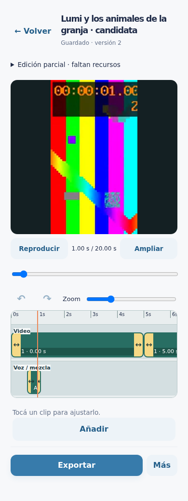
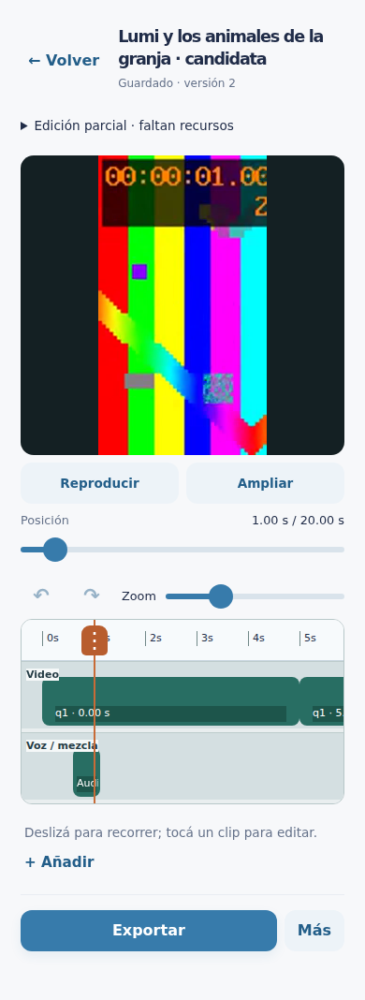
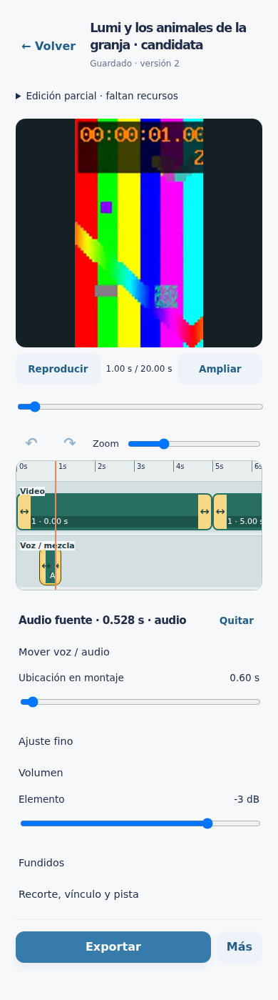
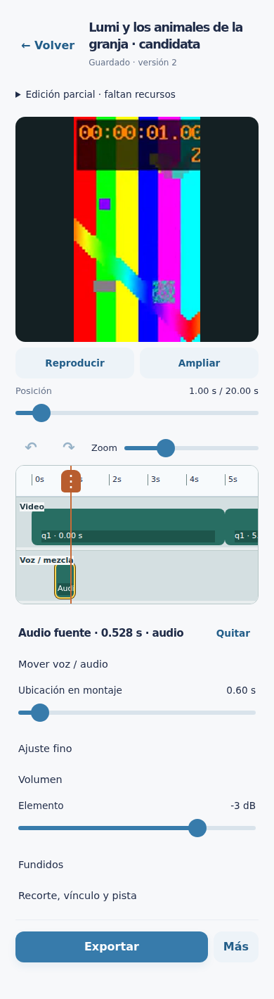

Comparativa del control de posición, la regla, el zoom y los controles contextuales. Capturas de Chromium con módulos reales y fixtures aislados; no son pruebas físicas de iPhone.




Texto al 125% · Mediciones anteriores · Pruebas táctiles · Guardado, sincronía y conflictos · Reproducción y buffering
La exportación real de EP004 conserva su fallo anterior. Este ajuste no genera contenido ni vuelve a exportar ese episodio.